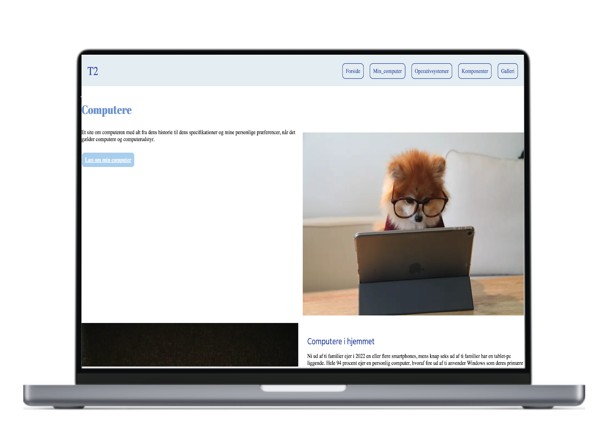
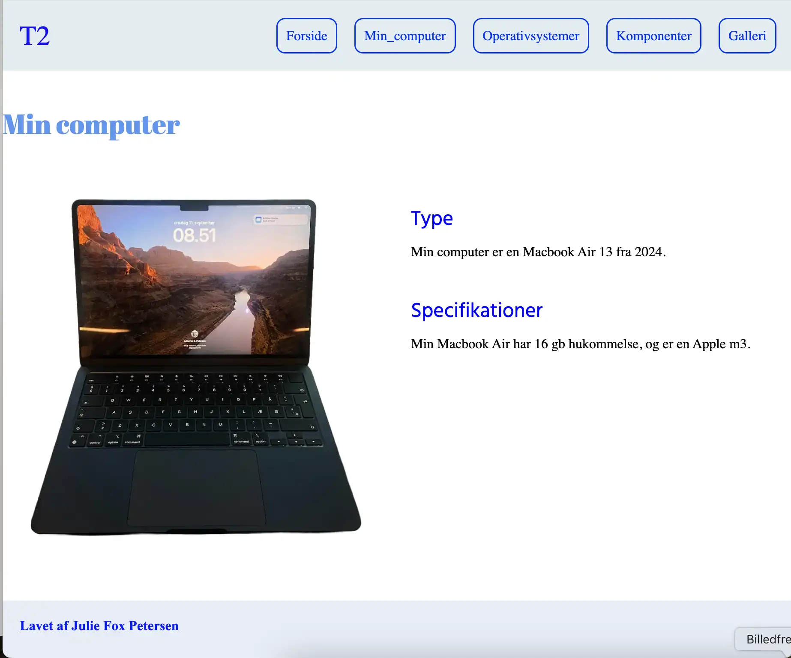
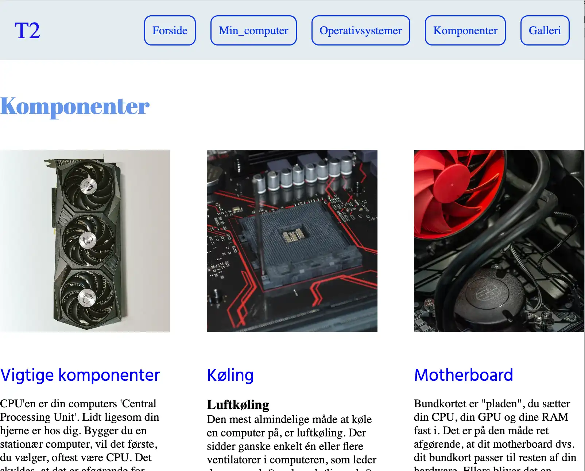
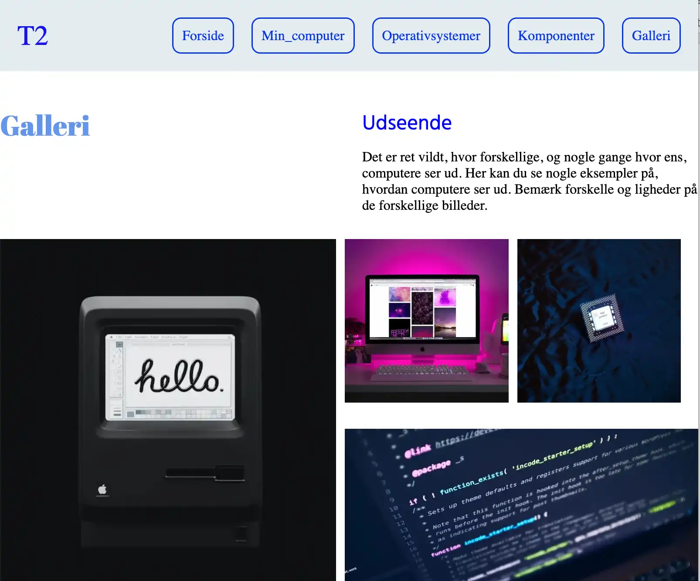

GRUNDLÆGGENDE WEB
Grundlæggende web, var det første forløb vi fik på 1.semester. Gennem dette forløb lærte vi at opbygge vores egen hjemmesiden for første gang ved hjælp af grundlæggende viden om html og css.
I dette forløb fik vi udleveret et layoutdiagram som vi skulle følge, samt passende billeder til emnet. Emnet omhandlede computerere, og websitet er opbygget ved hjælp af grids. Dette emne var en af de mest lærerige emner, da det var første gang vi fik læring i grundlæggende kodning ved hjælp af html og css.


